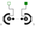

LineForceWithTwoMassesGeneral line force component with two optional point masses on the connection line |

|
Information
This information is part of the Modelica Standard Library maintained by the Modelica Association.
This component is used to exert a line force between the origin of frame_a and the origin of frame_b by attaching components of the 1-dimensional translational mechanical library of Modelica (Modelica.Mechanics.Translational) between the two flange connectors flange_a and flange_b. Optionally, there are two point masses on the line connecting the origin of frame_a and the origin of frame_b. These point masses approximate the masses of the force element. The locations of the two point masses are defined by their (fixed) distances of L_a relative to frame_a and of L_b relative to frame_b, respectively.
In example MultiBody.Examples.Elementary.LineForceWithTwoMasses the usage of this line force element is shown and is compared with an alternative implementation using a MultiBody.Joints.Assemblies.JointUPS component. The composition diagram of this example is displayed in the figure below.

The animation view at time = 0 is shown in the next figure. The system on the left side in the front is the animation with the LineForceWithTwoMasses component whereas the system on the right side in the back is the animation with the JointUPS component. Both implementations yield the same result. However, the implementation with the LineForceWithTwoMasses component is simpler.

In the translational library there is the implicit assumption that forces of components that have only one flange connector act with opposite sign on the bearings of the component. This assumption is also used in the LineForceWithTwoMasses component: If a connection is present to only one of the flange connectors, then the force in this flange connector acts implicitly with opposite sign also in the other flange connector.
Parameters (11)
| s_small |
Value: 1e-10 Type: Distance (m) Description: Prevent zero-division if distance between frame_a and frame_b is zero |
|---|---|
| fixedRotationAtFrame_a |
Value: false Type: Boolean Description: = true, if rotation frame_a.R is fixed (to directly connect line forces) |
| fixedRotationAtFrame_b |
Value: false Type: Boolean Description: = true, if rotation frame_b.R is fixed (to directly connect line forces) |
| animate |
Value: true Type: Boolean Description: = true, if animation shall be enabled |
| animateMasses |
Value: true Type: Boolean Description: = true, if point masses shall be visualized provided animate=true and m_a, m_b > 0 |
| m_a |
Value: 0 Type: Mass (kg) Description: Mass of point mass a on the connection line between the origin of frame_a and the origin of frame_b |
| m_b |
Value: 0 Type: Mass (kg) Description: Mass of point mass b on the connection line between the origin of frame_a and the origin of frame_b |
| L_a |
Value: 0 Type: Position (m) Description: Distance between point mass a and frame_a (positive, if in direction of frame_b) |
| L_b |
Value: L_a Type: Position (m) Description: Distance between point mass b and frame_b (positive, if in direction of frame_a) |
| cylinderLength_a |
Value: 2 * L_a Type: Length (m) Description: Length of cylinder at frame_a |
| cylinderLength_b |
Value: 2 * L_b Type: Length (m) Description: Length of cylinder at frame_b |
Inputs (9)
| specularCoefficient |
Default Value: world.defaultSpecularCoefficient Type: SpecularCoefficient Description: Reflection of ambient light (= 0: light is completely absorbed) |
|---|---|
| cylinderDiameter_a |
Default Value: world.defaultForceWidth Type: Diameter (m) Description: Diameter of cylinder at frame_a |
| color_a |
Default Value: {155, 155, 155} Type: Color Description: Color of cylinder at frame_a |
| diameterFraction |
Default Value: 0.8 Type: Real Description: Diameter of cylinder at frame_b with respect to diameter of cylinder at frame_a |
| color_b |
Default Value: {100, 100, 100} Type: Color Description: Color of cylinder at frame_b |
| massDiameterFaction |
Default Value: 1.7 Type: Real Description: Diameter of point mass spheres with respect to cylinderDiameter_a |
| massColor |
Default Value: Modelica.Mechanics.MultiBody.Types.Defaults.BodyColor Type: Color Description: Color of point masses |
| cylinderDiameter_b |
Default Value: cylinderDiameter_a * diameterFraction Type: Length (m) |
| massDiameter |
Default Value: cylinderDiameter_a * massDiameterFaction Type: Length (m) |
Connectors (4)
| frame_a |
Type: Frame_a Description: Coordinate system a fixed to the component with one cut-force and cut-torque |
|
|---|---|---|
| frame_b |
Type: Frame_b Description: Coordinate system b fixed to the component with one cut-force and cut-torque |
|
| flange_b |
Type: Flange_a Description: 1-dim. translational flange (connect force of Translational library between flange_a and flange_b) |
|
| flange_a |
Type: Flange_b Description: 1-dim. translational flange (connect force of Translational library between flange_a and flange_b) |
Components (5)
Used in Examples (1)
|
Modelica.Mechanics.MultiBody.Examples.Elementary Demonstrate line force with two point masses using a JointUPS and alternatively a LineForceWithTwoMasses component |